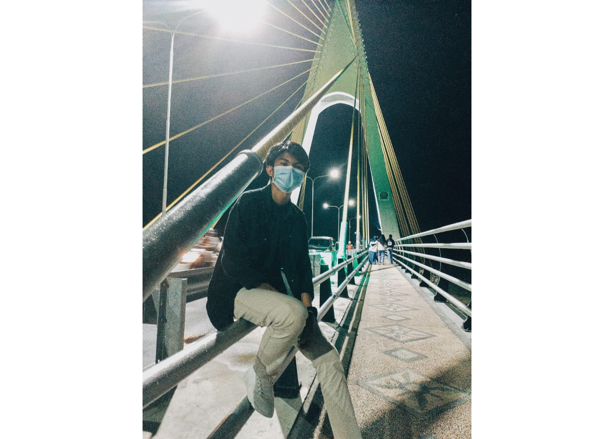
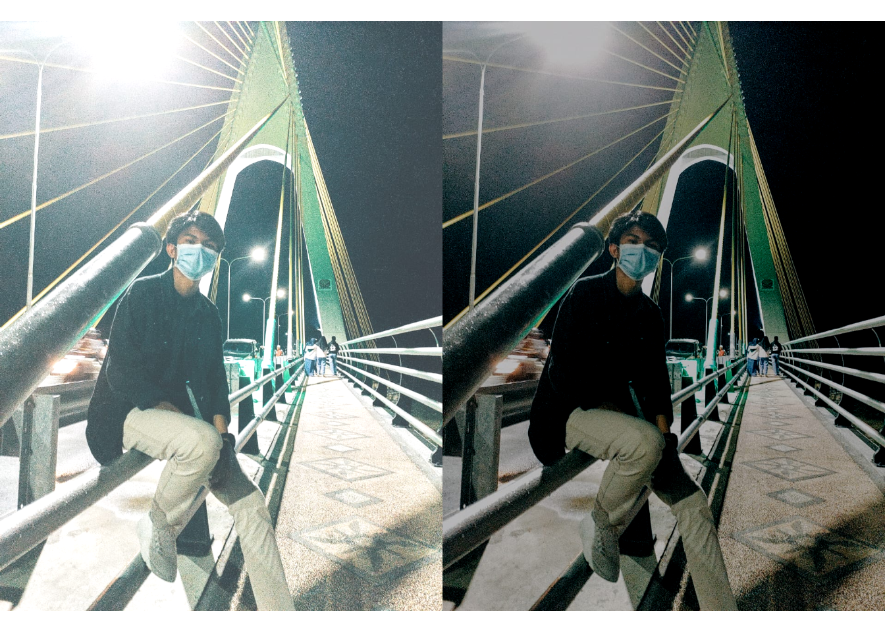
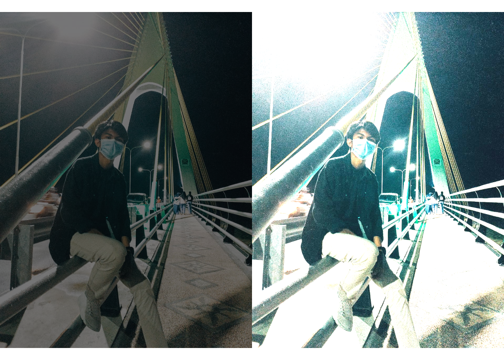
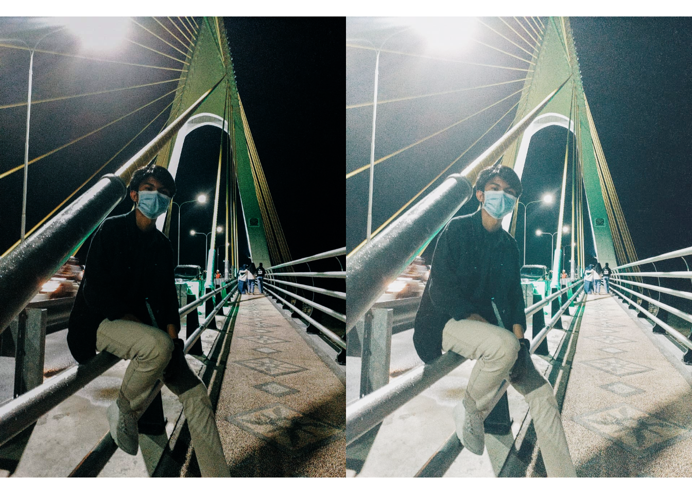
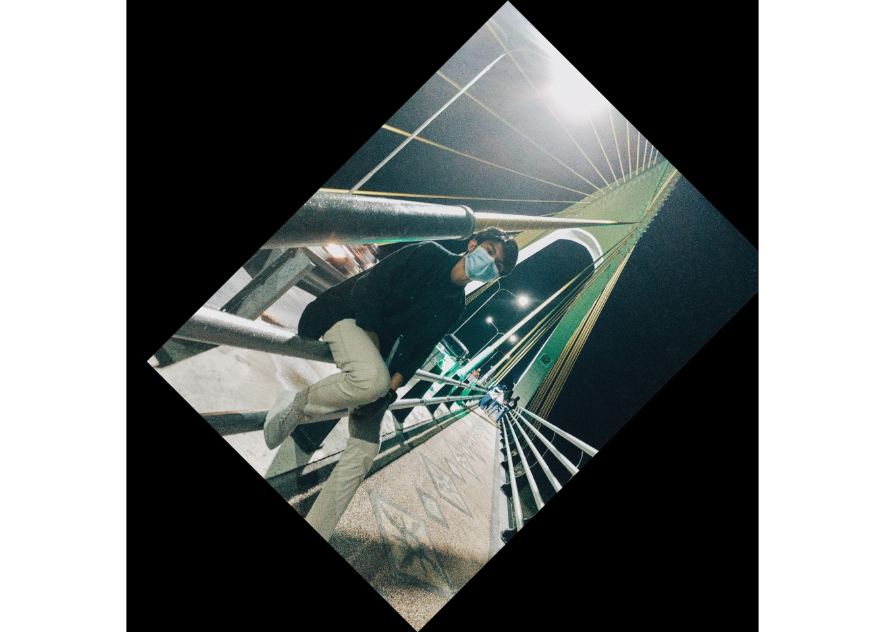
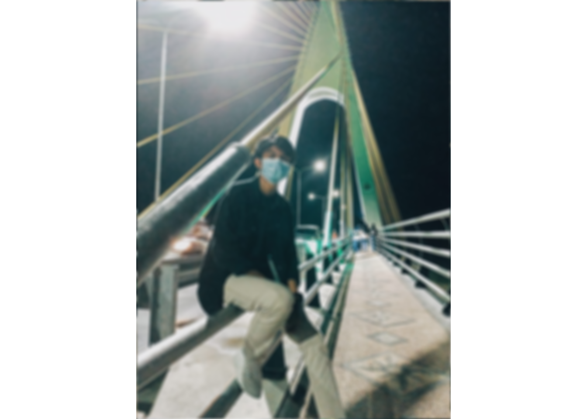
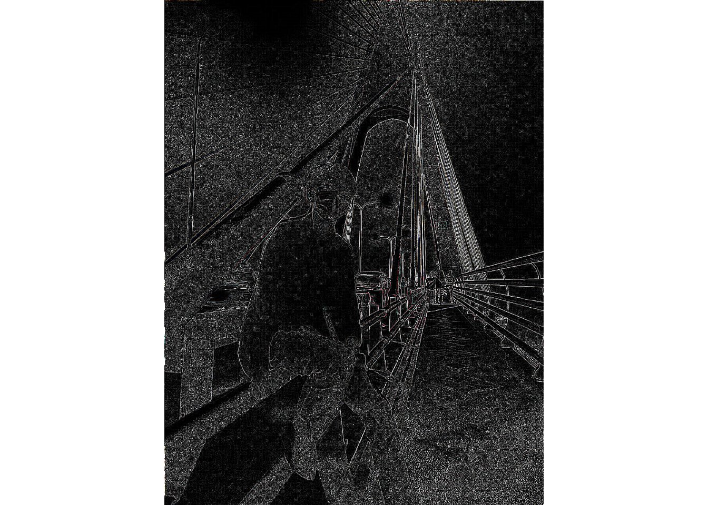
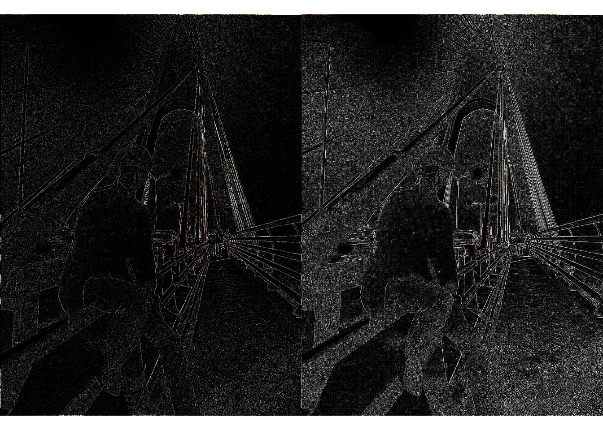

EBI Image
Zaky Fathurrahman
16 Maret 2021
Instalisasi Package EBI Image
Pertama kita harus menginstal package EBImage terlebih dahulu. kita akan menginstall package BiocManager terlebih dahulu dengan menggunakan code berikut:
if (!requireNamespace("BiocManager", quietly = TRUE))
install.packages("BiocManager")
BiocManager::install("EBImage")## Bioconductor version 3.12 (BiocManager 1.30.12), R 4.0.3 (2020-10-10)## Installing package(s) 'EBImage'## package 'EBImage' successfully unpacked and MD5 sums checked## Warning: cannot remove prior installation of package 'EBImage'## Warning in file.copy(savedcopy, lib, recursive = TRUE): problem
## copying D:\R-4.0.3\library\00LOCK\EBImage\libs\x64\EBImage.dll to D:
## \R-4.0.3\library\EBImage\libs\x64\EBImage.dll: Permission denied## Warning: restored 'EBImage'##
## The downloaded binary packages are in
## C:\Users\ASUS\AppData\Local\Temp\RtmpgHBJQt\downloaded_packages## Old packages: 'Matrix', 'packrat', 'tiff', 'tinytex', 'xfun'Panggil Gambar
pada step ini akan menampilkan gambar yang akan kita panggil
setwd("D:/RStudio/Task 2/Task 3/")
library(EBImage)
Image <- readImage('foto.jpeg')
display(Image)
print(Image)## Image
## colorMode : Color
## storage.mode : double
## dim : 960 1280 3
## frames.total : 3
## frames.render: 1
##
## imageData(object)[1:5,1:6,1]
## [,1] [,2] [,3] [,4] [,5] [,6]
## [1,] 0.7333333 0.7019608 0.6823529 0.7372549 0.7215686 0.6823529
## [2,] 0.6823529 0.6901961 0.7019608 0.7725490 0.7686275 0.7333333
## [3,] 0.7058824 0.7058824 0.6941176 0.7215686 0.7137255 0.7058824
## [4,] 0.7137255 0.7176471 0.6901961 0.6980392 0.6823529 0.6941176
## [5,] 0.6666667 0.7019608 0.7137255 0.7529412 0.7490196 0.7450980Brightness
Disini kita dapat mengatur tingkat keceraham pada gambar kita
Image1 <- Image + 0.2
Image2 <- Image - 0.2
par(mfrow= c(1,2))
plot(Image1)
plot(Image2)
Adjusting Contrast
Disini tempat kita mengatur tingkat kontras pada gambar kita
Image3 <- Image * 0.5
Image4 <- Image * 2
par(mfrow= c(1,2))
plot(Image3)
plot(Image4)
Gamma Correction
Code berikut digunakan untuk mengatur Gamma Correction pada foto
Image5 <- Image ^ 2
Image6 <- Image ^ 0.7
par(mfrow= c(1,2))
plot(Image5)
plot(Image6)
Cropping
Untuk memotong gambar kita menggunakan code berikut
display(Image[189:500, 100:600,])
Spatial Transformation (Rotasi)
Untuk memutar gambar kita menggunakan code berikut
Imagetr <- translate(rotate(Image, 45), c(50, 0))
display(Imagetr)
Color Management
Untuk memanajemen warna atau mengubah warna kita menggunakan code berikut
colorMode(Image) <- Grayscale
display(Image)## Only the first frame of the image stack is displayed.
## To display all frames use 'all = TRUE'.print(Image)## Image
## colorMode : Grayscale
## storage.mode : double
## dim : 960 1280 3
## frames.total : 3
## frames.render: 3
##
## imageData(object)[1:5,1:6,1]
## [,1] [,2] [,3] [,4] [,5] [,6]
## [1,] 0.7333333 0.7019608 0.6823529 0.7372549 0.7215686 0.6823529
## [2,] 0.6823529 0.6901961 0.7019608 0.7725490 0.7686275 0.7333333
## [3,] 0.7058824 0.7058824 0.6941176 0.7215686 0.7137255 0.7058824
## [4,] 0.7137255 0.7176471 0.6901961 0.6980392 0.6823529 0.6941176
## [5,] 0.6666667 0.7019608 0.7137255 0.7529412 0.7490196 0.7450980colorMode(Image) <- Color
display(Image)
Filtering
Ini digunakan untuk mengubah atau menggunakan filter # High Pass Filter
fLow <- makeBrush(21, shape= 'disc', step=FALSE)^2
fLow <- fLow/sum(fLow)
Image.fLow <- filter2(Image, fLow)
display(Image.fLow) # Blur Filter
fHigh <- matrix(1, nc = 3, nr = 3)
fHigh[2, 2] <- -8
Image.fHigh <- filter2(Image, fHigh)
display(Image.fHigh) # Median Filter
setwd("D:/RStudio/Task 2/Task 3/")
library(EBImage)
aa<- medianFilter(Image.fHigh,1.1)
par(mfrow= c(1,2))
plot(aa)
plot(Image.fHigh)
Image <- readImage("foto.jpeg")
medFltr <- medianFilter(Image, 1.1)
display(medFltr)